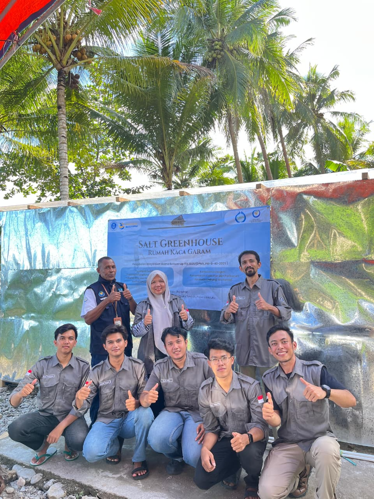
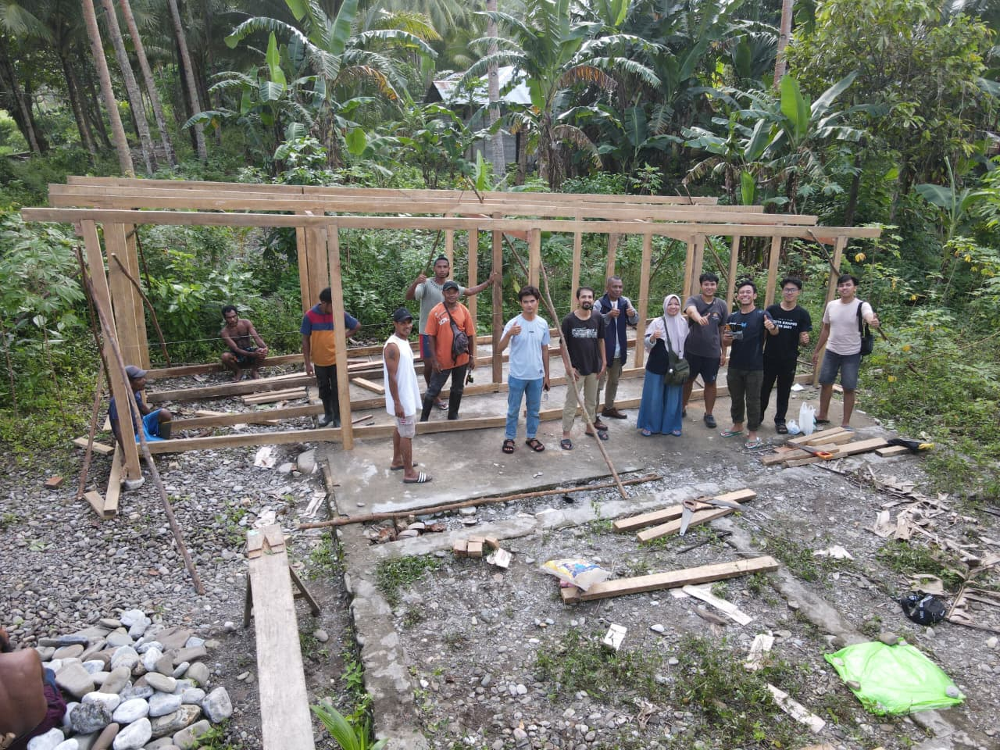
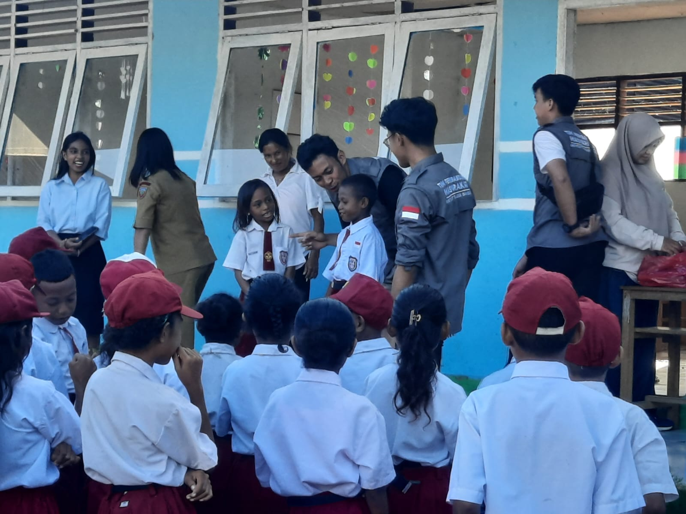
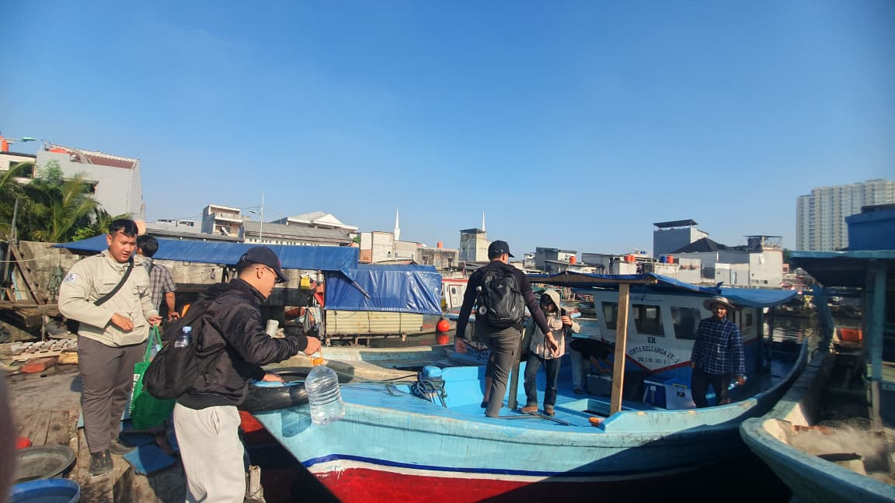
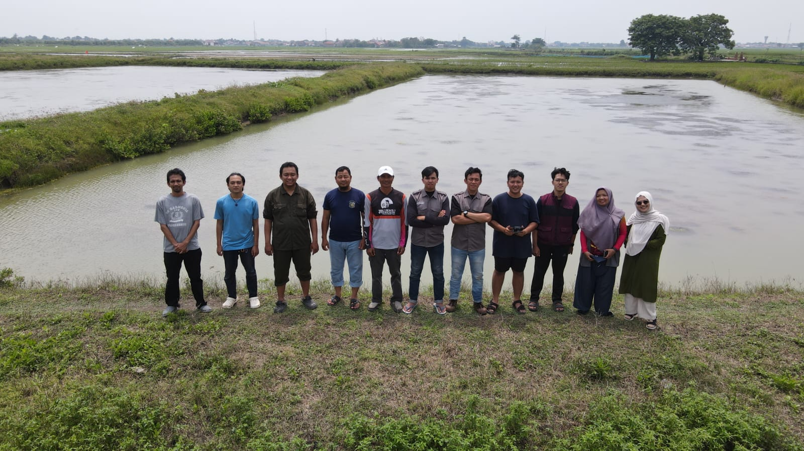
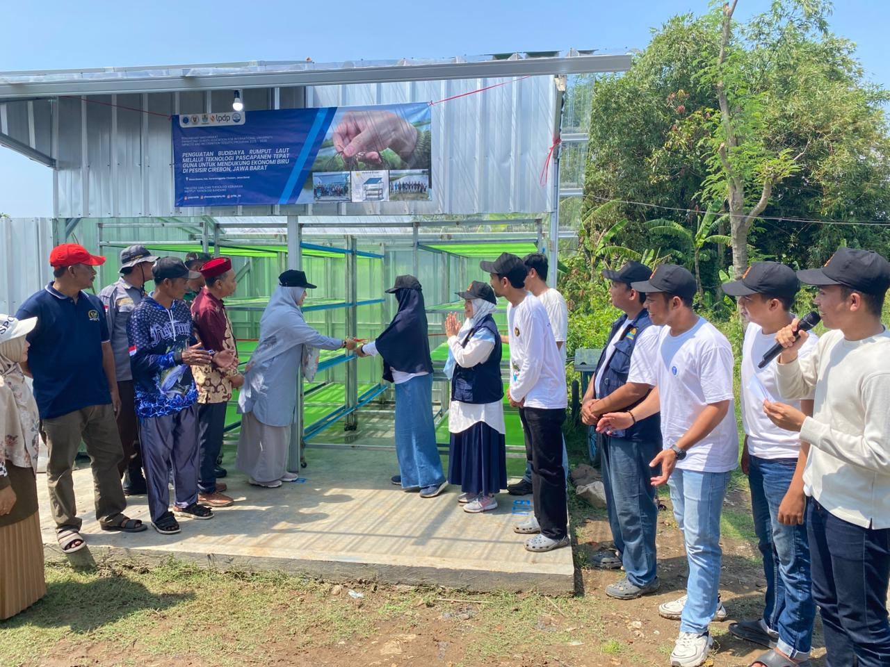
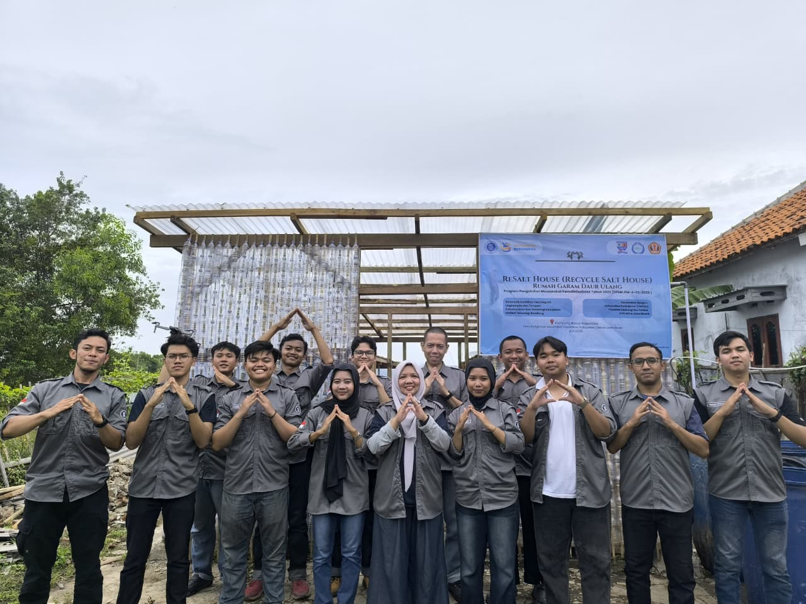
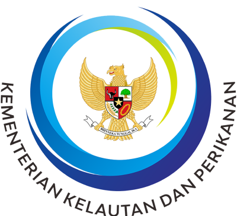

Konservasi Laut
Melindungi terumbu karang dan ekosistem laut Indonesia.
Yayasan Lindungi Ibu Pertiwi
Kami berkomitmen menjaga laut, mangrove, dan keanekaragaman hayati Indonesia bersama masyarakat pesisir di seluruh Nusantara.

Tentang Kami
Yayasan Lindungi Ibu Pertiwi hadir untuk menjembatani konservasi lingkungan pesisir dan laut Indonesia dengan pemberdayaan masyarakat setempat. Kami percaya kelestarian alam hanya dapat terwujud bila masyarakat ikut menjadi penjaganya.
Nusantara yang lestari dan berkelanjutan.
Konservasi berbasis kolaborasi masyarakat.
Profesional, kolaboratif, berkelanjutan.
Program
Relawan
Provinsi
Desa Binaan
Apa yang Kami Kerjakan
Melindungi terumbu karang dan ekosistem laut Indonesia.
Rehabilitasi dan penanaman hutan mangrove pesisir.
Menjaga kekayaan spesies flora dan fauna Nusantara.
Pelatihan ekonomi berkelanjutan untuk warga pesisir.
Mitigasi dan adaptasi dampak perubahan iklim.
Riset ilmiah untuk mendukung kebijakan konservasi.
Alasan Bermitra
Dikelola tim ahli lingkungan dan pemberdayaan masyarakat.
Bekerja sama dengan pemerintah, komunitas, dan mitra global.
Program dirancang untuk dampak jangka panjang.
Dokumentasi Lapangan






Kabar Terkini
12 Juni 2026
Kegiatan penanaman mangrove serentak melibatkan ratusan relawan dan masyarakat pesisir.
Baca Selengkapnya28 Mei 2026
Program pelatihan membekali warga dengan keterampilan pengelolaan ekowisata berkelanjutan.
Baca Selengkapnya15 Mei 2026
Hasil riset menjadi dasar rekomendasi kebijakan konservasi laut nasional.
Baca Selengkapnya
Setiap kontribusi Anda membawa perubahan nyata bagi laut dan daratan Indonesia.
Gabung Menjadi Relawan